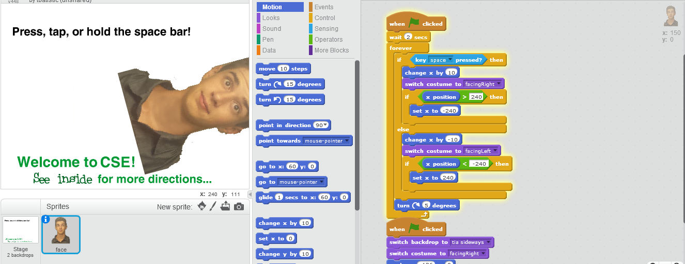
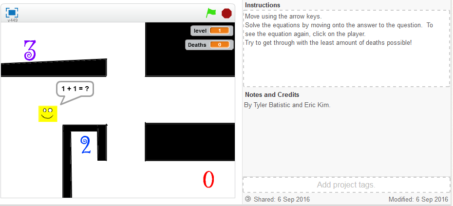
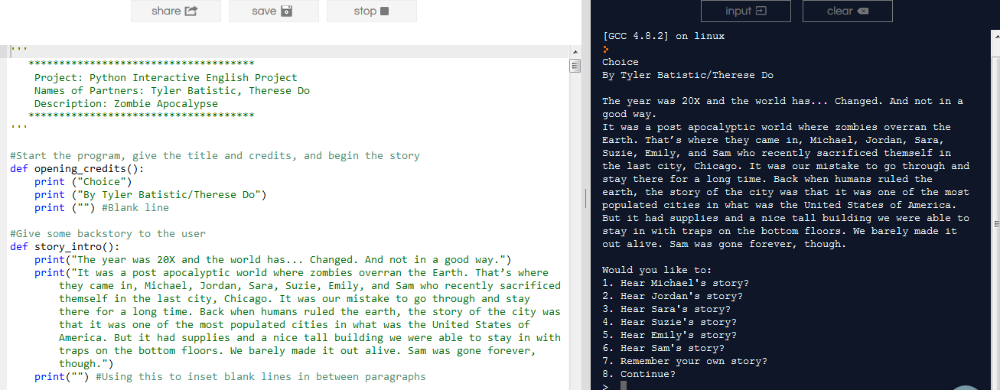
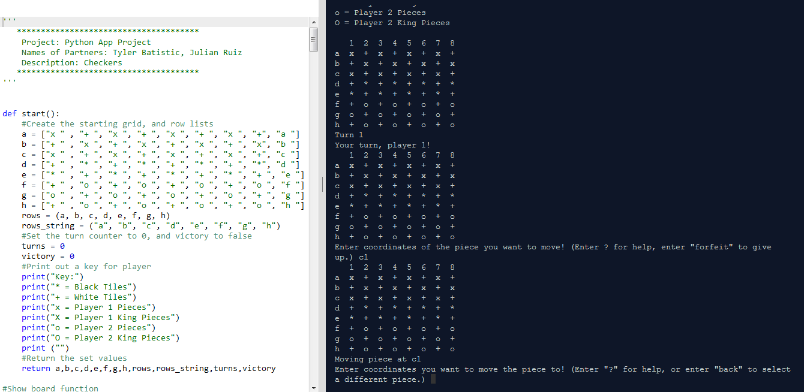

* Home * Portfolio * Jukebox * Arcade * Videos *
Here you can find all my classwork from this year.
1.1.3 - Branching and Iteration
In this first assignment, we had to use Scratch to modify a simple program. We had to learn about conditional logic and coordinate points.
1.1.7 - Math Maze
In 1.1.7, a partner and I had to use Scrath to create an educational game. We decided to make a maze game based around simple mathematical equations. We also had to keep a backlog to keep a log of our goals and progress.
1.3.3B - Python Interactive English Story
In 1.3.3B, a partner and I had to write an interactive story in Python 3 on repl.it. We also had to make a flowchart to plan out the braches in plot and code in our program.
1.3.10 - Python Checkers
In this assignment, a partner and I had to make an application in Python. We decided to make a 2-player game of Checkers.
In this assignment, a created a design brief based around solving the problem of hacking in online games, and created a python program to graph ban data.